Rane
Kikkerbilletjes in knoflooksaus
€ 17,00
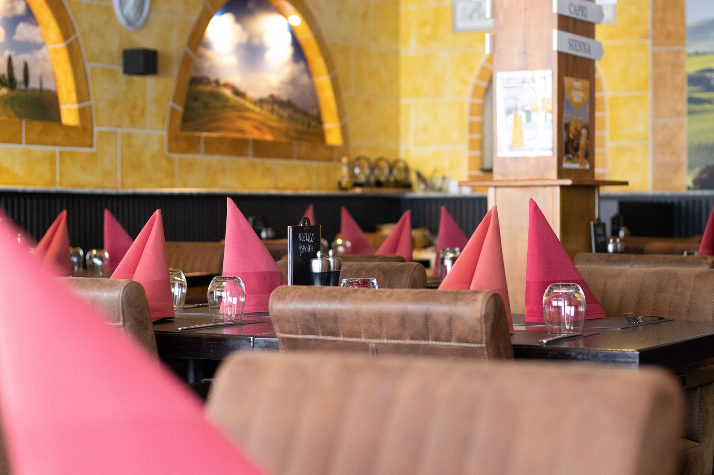
Vers bereide pasta's, pizza's, vlees en vis, met een goed glas Italiaanse wijn. In het restaurant, de serre of op ons grote terras, of gewoon thuis.
Italiaanse klassiekers, bereid met dagverse ingrediënten van onze vaste huisleveranciers. Een greep uit de kaart:
Kikkerbilletjes in knoflooksaus
€ 17,00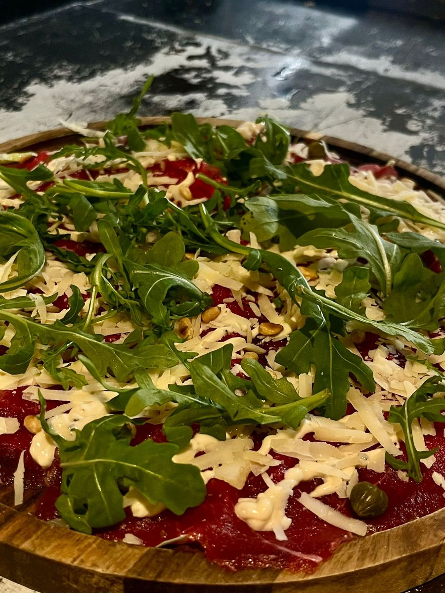
Vers gesneden runderhaas met rucola en pijnboompitten
€ 17,50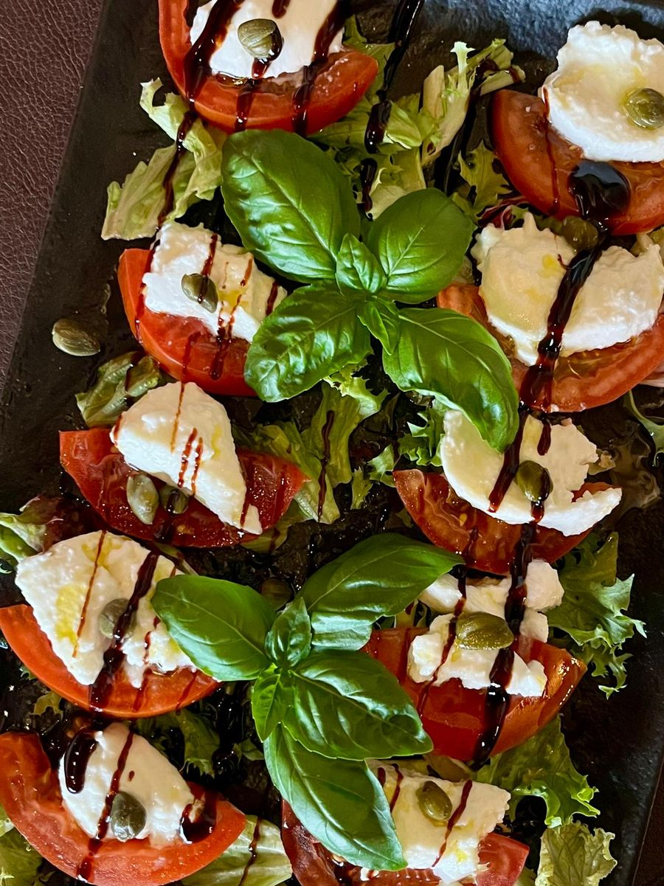
Tomaat, mozzarella en basilicum (vegetarisch)
€ 14,00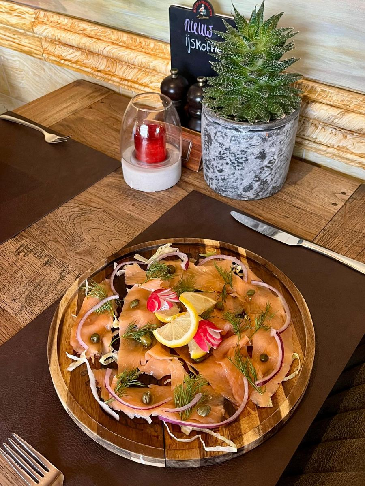
Gerookte zalm
€ 17,50
Gegrilde grote garnalen in knoflook en witte wijnsaus
€ 35,00
Zeetong in boter gebakken met vers fruit
DagprijsOnze zaak is pas verbouwd. Aan de achterkant ligt een groot terras: een verborgen plek om rustig te proosten, met een cocktail of een wijn uit onze Italiaanse wijnkaart.
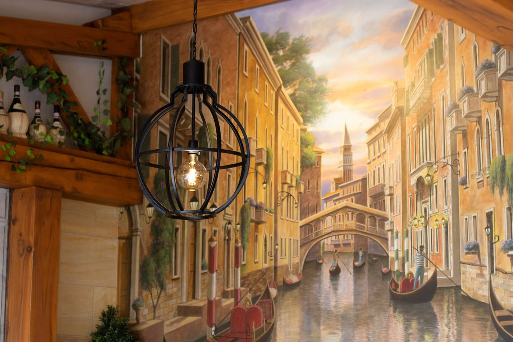
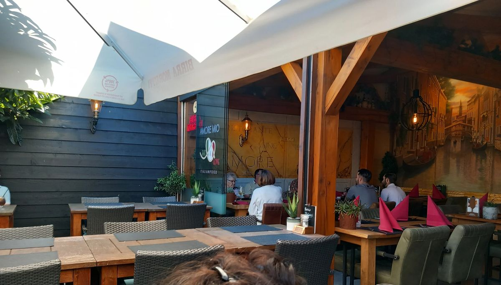
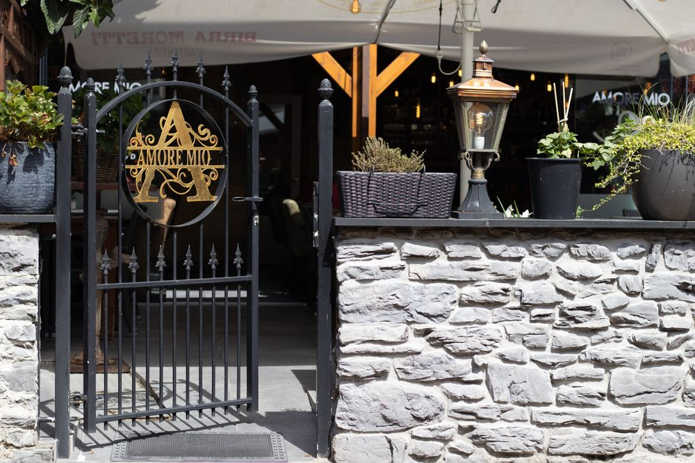
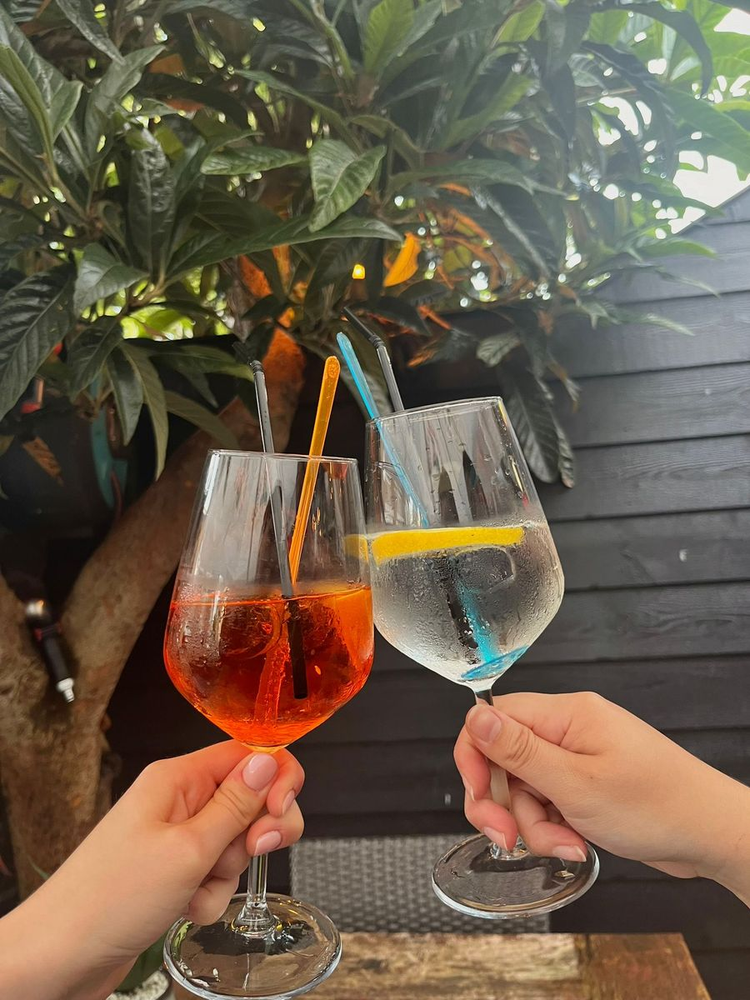
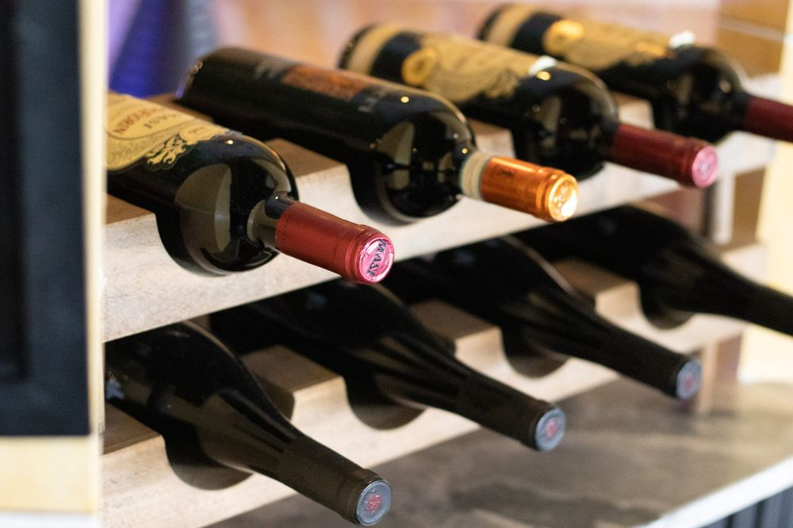
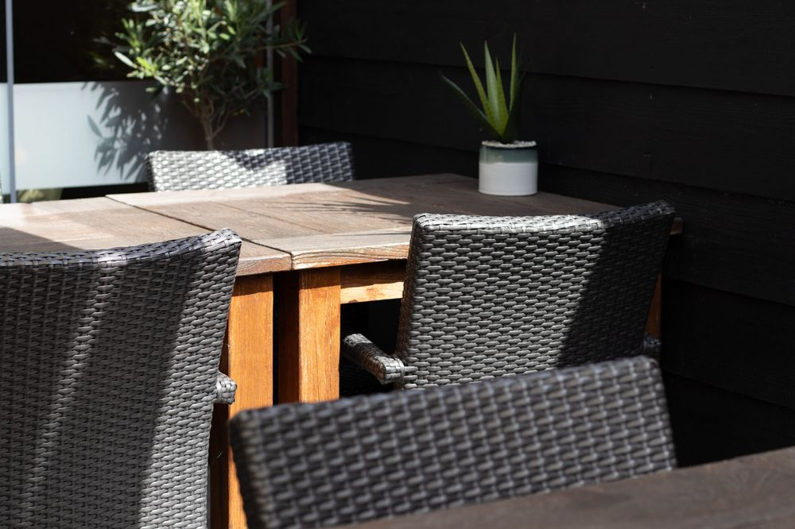
"Heerlijk gegeten, van de bruschetta tot de kikkerbillen, van de gegrilde gamba's tot de tournedos. Zeer smaakvol met vrolijke en vriendelijke bediening. Hier komen we graag eten, maar ook afhalen, aanrader !"
Roel de JonghGoogle"Een aanrader! Verse producten, ook de eigengebakken frieten. Vriendelijke bediening. De gebraden kikkerbilletjes zijn overheerlijk! Maar ook de minestrone soep en de pizza Capricciosa waren smakelijk. Onze tafelgasten vonden de kruidenboter met de extra bite toppie. We komen zeker terug naar Amore Mio in Steenbergen."
Tom van de VeerenGoogle"Lieve mensen, leuk aangekleed (…). Het eten is lekker, je krijgt een flink bord pasta."
Kilian BakxGoogle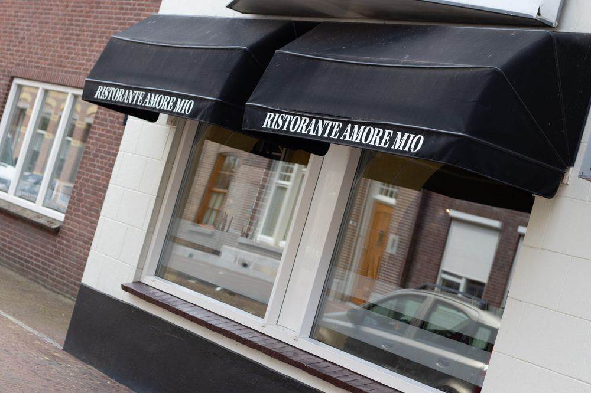
"De perfecte plaats om te genieten van het leven en heerlijk Italiaans te eten met je vrienden."
Amore Mio begon in 1992 als familiebedrijf met liefde voor Italië. Ruim dertig jaar later komen gasten nog steeds terug voor dezelfde eerlijke keuken: verse, seizoensgebonden ingrediënten van een vast groepje huisleveranciers, zonder kunstgrepen bereid.
Je vindt ons aan de Grote Kerkstraat, midden in het winkelgebied van Steenbergen. Een etentje combineer je zo met een dagje uit.
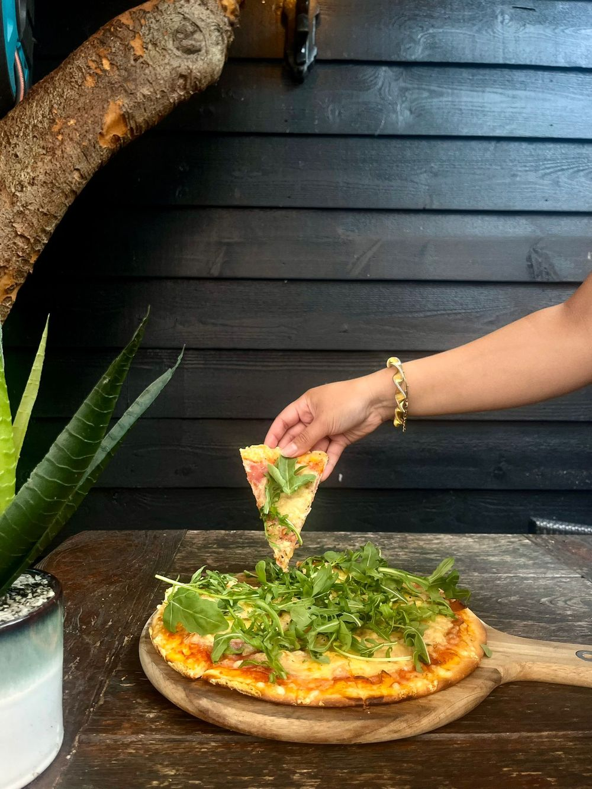
Onze gerechten zijn ook af te halen, met dezelfde kwaliteit als in het restaurant. Wij zorgen dat alles op tijd, vers en warm voor je klaarstaat.
Bel ons of stuur je aanvraag via WhatsApp. We houden graag een mooi plekje voor je vrij.
Reserveren en afhaal bestellen kan vanaf 15:00 uur. We staan je graag persoonlijk te woord.